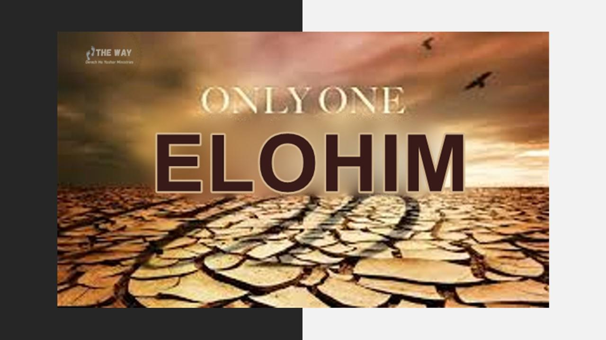

“I am” (ἐγώ εἰμι), by itself, is not a code for the name of Elohim
It is true that an important passage in Shemoth/Exodus uses “I am” to refer to Elohim.
Shemoth/Exodus 314 יהוה said to Mosheh, "I AM who I AM"; and he said, "Thus you shall say to the children of Yisra’el, 'I AM has sent me to you.'" (the “all caps” is one way that modern ‘’Bible’’s represent the phrase in this verse)
In Hebrew, the phrase “I am” ( א ֶֽהְי ֶ֖ה , ehyeh), is linguistically related to Elohim’s name, יהוה (YHUH/YHVH/YHWH, often represented in English as Yahuah, Yahweh or Jehovah). Many Hebrew scholars suggest that יהוה means something like “the one who is.” In fact, the Septuagint (ancient Greek translations of the Tanakh/OT, widely used by early Jews and Christians) did not translate the second א ֶֽהְי ֶ֖ה in Shemoth/Exodus 3:14 as ἐγώ εἰμι, but rather as ὁ ὢν, “the one who is.”
The Hebrew word “I am” (א ֶֽהְי ֶ֖ה , ehyeh), however, is not a code word or a technical title for Elohim. It is often used by Elohim in the Tanakh/Old Testament, but rarely as His title. It is used by many people simply to refer to themselves. Yephthah (Shophtim/Judg es11:9, Ruth 2:13, Shemu’el Aleph/1 Sam 18:18, Jonathan, Shemu’el Aleph/1 Sam 23:17), Shemu’el Bet/2 Sam 16:18, Iyob/Job 12:4) and many others use it to refer to themselves. It is a quite normal way to say “I am” for anyone.
In the Brit Chadashah/New Testament, ἐγώ εἰμι is used by Yahushua, Yudas (Matt 26:25), Gabriel (Luqas 1:19), the blind man (Yochanan/John 9:9), Kepha/Peter (Ma’asei/Acts 10:21) and Sha’ul/Paul (Ma’’asei/Acts 22:3, 26:29, Rom. 11:13, Timotiyos Aleph/1 Tim 1:15), always to refer to themselves. This matches the use in Greek outside the BC/NT. The Septuagint uses “I am” (ἐγώ εἰμι) in very normal ways. Elohim uses the phrase often, but so does Ya’’aqov/Jacob (Bereshit/Genesis27:32), Deborah (Shophtim/Judges 5:3), Gideon (Shophtim/Judges 6:15) and others. As I have searched through other works written in ancient Greek (Philo, the Pseudepigrapha, Plato and other philosophers), I have run across many such ordinary occurrences of ἐγώ εἰμι.
Yochanan/John 855Though you do not know him, I know him. If I said I did not, I would be a liar like you, but I do know him and keep his word.56Your father Avraham rejoiced at the thought of seeing my day; he saw it and was glad." 57 "You are not yet fifty years old," the Yehudim said to him, "and you have seen Avraham!" 58"I tell you the truth," Yahushua answered, "before Avraham was born, I am!" 59 At this, they picked up stones to stone him, but Yahushua hid himself, slipping away from the temple grounds.
In the scene above Yahushua is telling the Yehudim that because they transgress The Law of יהוה with their human tradition and commandments of men (the Talmud) they are liars when they say they know יהוה. When Yahushua made the statement “before Avraham was born, I AM” in context of the Word of יהוה and the predestined plan of יהוה to send a human Messiah; Yahushua was simply saying “before Avraham was born, I am (prophesied to come and have pre-eminence among the sons of יהוה in the pre- ordained Plan of יהוה).” Letting scripture interpret scripture we establish sound doctrine to overcome this sound bite. Yahushua knew he was given pre-eminence among all things in the plan of יהוה which was with יהוה at creation therefore “before Avraham”. Sha’ul confirms this fact:
Qolasim/Colossians 1:15-2015He is the image (human reflection of his father as all sons are reflection or images of their fathers) of the invisible Elohim, the firstborn son of all creation. 16For by יהוה all things were created, in heaven and on earth, visible and invisible, whether thrones or dominions or rulers or authorities—all things were created through יהוה and for Yahushua. 17And יהוה is before all things, and in יהוה all things hold together. 18And Yahushua is the head of the body, the church. Yahushua is the beginning, the firstborn from the dead, that in everything Yahushua might be preeminent. 19For in Yahushua all the fullness of יהוה’s Spirit was pleased to dwell, 20and through Yahushua, יהוה would reconcile to himself all things, whether on earth or in heaven, making peace by the blood of his cross (יהוה would reconcile creation in covenant with Yahushua).
Sha’ul is explaining what Yahushua was stating… two facts:
1.) he was before Avraham and had pre-eminence in the Plan of יהוה.
2.) Yahushua is before Avraham in the resurrection being the first born of all eternal creatures. Yahushua accepted worship as the preeminent son of יהוה and was before all men in the Plan of יהוה. Below is the meaning of pre-eminence:
pre·em·i·nence
noun: pre-eminence; plural noun: pre-eminences; noun: pre-eminence; plural noun: pre-eminences
1. the fact of surpassing all others; superiority.
So, before Avraham was born, Yahushua said “I am preeminent among the sons of יהוה”. Yahushua’s use of the phrase “I am” was no different than how you and I would use it today. If you ask me if I am a son of יהוה, I will reply “I am”. Would you stone me for blasphemy? I am not claiming in any way to be יהוה nor saying that I am The Great I AM simply because I used the phrase “I am”. Neither was Yahushua. In fact, Yahushua uses this phrase often and never was he implying he was the Great I AM in the process. Below we see Yahushua use the phrase I am and what he meant:
1. Bread - “I am the bread of life; he who comes to Me shall not hunger.” Yochanan/John 6:35
2. Light - “I am the light of the world; he who fallows Me shall not walk in the darkness but shall have the light of life.” Yochanan/John 8:12
3. Gate - “I am the gate; if anyone enters through Me, he shall be saved, and shall go in and out, and find pasture.” Yochanan/John 10:9
4. Good Shepherd - “I am the good shepherd; the good shepherd lays down His life for His sheep.” Yochanan/John 10:11
5. Resurrection and Life - “I am the resurrection and the life; he who believes in Me shall live even if he dies.” Yochanan/John 11:25
6. Way, Truth, Life - “I am the way, and the truth, and the life; no one comes to the Father, but through Me.” Yochanan/John 14:6
7. True vine - “I am the true vine, and My Father is the vinedresser.” Yochanan/John 15:1
Given Yahushua’s use of the term I Am he would have said “I am the Great I AM” if that is what he intended to say. Again, to understand what Yahushua was saying in Yochanan 8:58 we must put this statement into context of Scripture. Christianity and some Messianic groups take Yochanan 8:58 out of context and combines it with Yochanan Chapter 1 that is mistranslated to come up with the false teaching that Yahushua claimed to be Elohim.
In fact, those two verses do combine to give us the truth of what Yahushua was saying. Yahushua was simply saying that before Avraham was born,
Yahushua was prophesied to come in the Plan of יהוה and was preeminent in that plan. This is exactly what Yochanan 1 states:
Yochanan/John 1:1-51In the beginning was the plan of יהוה, and the plan was with יהוה (and defined His purpose in creation), and the plan was יהוה's. 2The same plan was in the beginning with יהוה. 3All things were done according to the plan of יהוה, and without the plan of יהוה nothing was done, that was done. 4In this plan was (predestined) life (through a human Messiah’s sacrifice, he was the for father of eternal life), and that life was the light (revelation) to mankind. 5Now that light (revealed plan to send a human Messiah) shines in the darkness, but the darkness does not take hold of it…
Again, in every case where incarnation is taught it is taken out of context. Put back into context that false doctrine crumbles and is exposed as The Spirit of the Antichrist.
Yochanan Aleph/1 John 41Dear friends, do not believe every spirit, but test the spirits to see whether they are from יהוה, because many false prophets have gone out into the world (all pagan ‘Christs” were demi-Elohim i.e. Tammuz, Horus, Hesus, Krhishna, Apollo, Mithra, in whose image was fashioned at the Council of Nicaea). 2This is how you can recognize the Spirit of יהוה: Every spirit that acknowledges that the Messiah Yahushua has come in the flesh (100% human) is from יהוה, 3but every spirit that does not acknowledge (that Yahushua was human, but elevates a man who died as Elohim above יהוה Rom. 1) is not from Elohim; this (doctrine of incarnation that Jesus is Elohim in the flesh) is the spirit of the antichrist, of which you have heard that it is coming, and now it is already in the world. 4You are from יהוה (not just Yahushua we all are ‘from יהוה’), little children (speaking to the spiritually immature), and have overcome them (the pagan incarnate Elohim-men Christs they once believed in); because greater is יהוה who is in you than he (the spirit of Dagon the Dragon Hazon/Rev. 13) who is in the world. 5They (the pagans who believe in Elohim-men known as Christs i.e. Christos Mithra, Christos Appolos, Khrishna, Christos Hesus) are from the (pagan) world; therefore they speak as from the world (as pagans in their doctrines), and the (pagan) world listens to them. 6We are from יהוה; he who knows יהוה (is the only true Elohim and there is no other) listens to us (who teach that Yahushua came in the flesh as all men do and was raised divine and so became the for-father of eternal life); he who is not from יהוה does not listen to us. By this we know the spirit of truth (Yahushua was not יהוה incarnate) and the spirit of error (the doctrine of incarnation).
The Trinity and Incarnation doctrines are literally built upon implied doctrine and the Christian scribes had to add words to Scripture in order to even be able to “imply” such nonsense. If you take out the words added to scripture to promote the “doctrine of the False Messiah ” and put those verses back into context there is zero references to incarnation and the Trinity. We have been lied to for 2000 years:
Yirmeyahu/Jeremiah 8:8-9“How can you say, ‘We are wise, and The Law of יהוה is with us’? But behold, the lying pen of the scribes has made it into a lie. 9The wise men shall be put to shame; they shall be dismayed and taken; behold, they have rejected the word of יהוה, so what wisdom is in them?
Yirmeyahu/Jeremiah 16:19
O יהוה, my strength, and my fortress, and my refuge in the day of affliction, the Gentiles shall come unto thee from the ends of the earth, and shall say, surely our fathers have inherited lies, false Elohim, and pagan rituals wherein there is no profit.